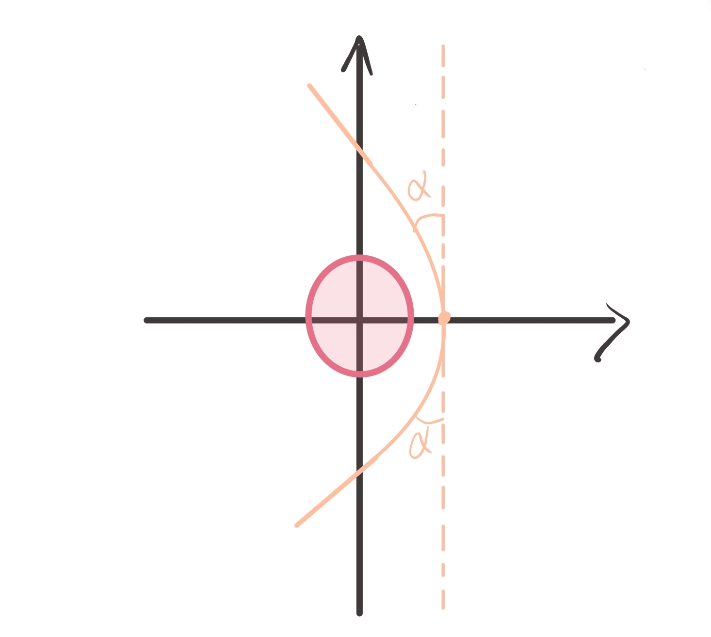

引力场的几何化与弱场近似
引力几何化
在闵氏时空 ${\tilde{x}^{\mu }}$ 中，自由粒子运动方程为 $\frac{\mathrm{d}^{2 }\tilde{x}^{\mu }}{\mathrm{d}\tau^{2 }}=0$ ，如果引入坐标变换
$$ x^{\mu } = x ^{\mu }(\tilde{x})~,\implies \text{运动方程：} \frac{\mathrm{d}^{2 }x^{\mu }}{\mathrm{d} \tau ^{2 }} + \Gamma ^{\mu }_{\alpha\beta} \frac{\mathrm{d} x^{\alpha } }{ \mathrm{d} \tau } \frac{\mathrm{d} x^{\beta } }{\mathrm{d}\tau}=0~, $$其中 $\Gamma^{\mu}_{\alpha\beta}\equiv \frac{\partial ^{2 } \tilde{x}^{\nu }}{\partial x^{\alpha }\partial ^{\beta }} \frac{\partial x^{\mu } }{ \partial \tilde{x}^{\nu } }$ ， 多出的 $\Gamma$ 项代表了惯性力的作用，如此，引力场的场强蕴含在时空的几何——联络中，这就是引力几何化 . 此外，无论是惯性力场还是引力场，自由粒子的运动方程都是测地线方程 .
$$ \begin{matrix} \Gamma_{\mu \nu}^{\lambda } & \longleftrightarrow & E_{G} \\ \uparrow \partial & &\uparrow {\partial} \\ g_{\mu \nu} & \longleftrightarrow & \Phi_{G} \end{matrix} $$类比
- 静电势（标量） $\to$ 电四矢(矢量) $\to$ Spin 1
- 引力势（标量） $\to$ 度规(二阶张量) $\to$ Spin 2
弱引力场中的自由粒子
弱引力场中的自由粒子
$$ \frac{\mathrm{d}^{2 }x^{\mu }}{\mathrm{d}\tau ^{2 }} + \Gamma ^{\lambda }_{\mu \nu} \frac{\mathrm{d} x^{\alpha }}{\mathrm{d}\tau} \frac{\mathrm{d} x^{\beta } }{\mathrm{d}\tau} = 0\implies \frac{\mathrm{d}^{2 }x^{i }}{\mathrm{d}t^{2 }} = \frac{1}{2}\partial_{i}h_{00} ~, \tag{$\star$} $$对于如下条件：
- 度规展开到一阶扰动： $g_{\mu\nu}=\eta_{\mu \nu}+h_{\mu \nu}~, |h|\ll 1$ .
- 稳态的引力场：$\partial_{0}g_{\mu \nu}=\partial_{0}h_{\mu \nu}=0$ .
- 空间缓慢变化：$|\partial_{i}g_{\mu \nu}|=|\partial_{i}h_{\mu \nu}|\ll 1$ .
- 粒子低速运动：$\big|\frac{\mathrm{d}x^{i }}{\mathrm{d}x^{0 }}\big|=|\vec{v}|\ll 1$ .
$(\star)$ 若可以回到牛顿方程：
$$ \frac{\mathrm{d}^{2 }x^{i }}{\mathrm{d}t^{2 }} = \frac{1}{2}\partial_{i}h_{00}\implies \Phi_{G}=-\frac{1}{2}h_{00}~. $$对于球对称质量为 $M$ 的引力源 $\Phi_{G}=- \frac{GM}{r}$ ，则有
$$ g_{00} = -1-2 \Phi_{G} - \left( 1- \frac{2GM}{r} \right) ~, $$其中 $G$ 为牛顿引力常数，$c=1$ ，定义史瓦西半径（引力半径） $R_{S}\equiv\frac{2GM}{c^{2 }}=2GM$ ，那么弱场条件为
$$ r\gg 2GM~, $$对于太阳而言，$R_{S}=\frac{2GM_{\odot}}{c^{2 }}\simeq 3\ \mathrm{km}$，而太阳实际半径 $R_{\odot}\simeq 7 \times 10^{5 }\mathrm{km}$ ，可见太阳系内天体（即使太阳表明）的运动大都适用弱场条件 .
- 下面我们计算弱引力场自由粒子运动方程可以约化为 $\frac{\mathrm{d}^{2 }x^{i }}{\mathrm{d}t^{2 }} = \frac{1}{2}\partial_{i}h_{00}$ .
把联络展开到一阶小量
$$ \begin{aligned} \Gamma ^{\mu }_{\alpha\beta} &= \frac{1}{2}g^{\mu \lambda }\left( \partial_{\alpha}g_{\lambda\beta}+\partial_{\beta}g_{\alpha\lambda}-\partial_{\lambda}g_{\alpha\beta} \right) \\ &\simeq \frac{1}{2}\eta ^{\mu\lambda }\left( \partial_{\alpha}h_{\lambda\beta}+\partial_{\beta}h_{\alpha\lambda}-\partial_{\lambda}h_{\alpha\beta} \right) ~, \end{aligned} $$根据 $\Gamma ^{\mu }_{ij}\frac{\mathrm{d}x^{i }}{\mathrm{d}\tau} \frac{\mathrm{d}x^{j }}{\mathrm{d}\tau} \sim \partial h \cdot \vec{v}\to \mathcal{O}(h^{2 })$ ， 测地线方程保留到一阶有
$$ \frac{\mathrm{d}^{2 }x^{\mu }}{\mathrm{d}\tau ^{2 }}=-\Gamma ^{\mu }_{00}\left( \frac{\mathrm{d}x^{0 }}{\mathrm{d}\tau} \right) ^{2 }~, $$即
$$ \begin{aligned} \frac{\mathrm{d}^{2 }x^{0 }}{\mathrm{d}\tau ^{2 }} &= -\Gamma ^{0 }_{00}\left( \frac{\mathrm{d}x^{0 }}{\mathrm{d}\tau} \right)^{2 }~,\quad \\ \frac{\mathrm{d}^{2 }x^{i }}{\mathrm{d}\tau ^{2 }} &= - \Gamma ^{i }_{00} \left( \frac{\mathrm{d}x^{0 }}{\mathrm{d}\tau} \right)^{2 }~, \end{aligned} $$第一式 $\Gamma ^{0 }_{00}=0\implies t=\tau+Const$ ，根据此第二式给出
$$ \frac{\mathrm{d} ^{2 } x^{i } }{\mathrm{d} \tau ^{2 } } = \frac{1}{2}\partial_{i}h_{00}~, $$由此我们就得到了弱场条件下简化后的测地线方程 .
爱因斯坦方程及其牛顿近似
爱因斯坦引力场方程：
$$ G_{\mu \nu}+\Lambda g_{\mu \nu} = 8 \pi G T_{\mu \nu}~, $$其中 $G_{\mu \nu}\equiv R_{\mu \nu}-\frac{1}{2}g_{\mu \nu}R$ 为爱因斯坦张量 ， $\Lambda$ 为宇宙学常数 . 取 $\Lambda=0$ 并对上式求 trace 可得
$$ \begin{aligned} g^{\mu \nu }G_{\mu \nu} &= 8 \pi G T\; \Leftrightarrow \;-R=8\pi G T\\ \implies R_{\mu \nu} &= 8\pi G (T_{\mu \nu} -g_{\mu \nu}T)~, \end{aligned} $$那么对于真空就有 $R_{\mu \nu}=0$ .
- 下面是爱因斯坦方程的简要推导
考虑牛顿引力场方程的形式 $\nabla ^{2 }\Phi_{G}=4\pi G\rho$ ，在弱场情况下我们已知左边引力势 $\Phi_{G}\sim h_{00}$ ，因此考虑将其推广到张量形式. 对于 $\rho$ 的一个自然选择就是能动张量 $T_{\mu \nu}$ ，那么假设引力场方程数学形式为
$$ F_{\mu \nu}(g_{\mu \nu}) = \kappa T_{\mu \nu}~, $$为了能退化回牛顿引力，且避免 Ostrogradsky Instability 1 ，另一方面也为了理论的简洁性，我们考虑 $F_{\mu \nu}(g_{\mu \nu})$ 最多只能含 $g_{\mu \nu}$ 的二阶导数，且线性依赖 $g_{\mu \nu}$ 二阶导，那么其一般形式为2
$$ F_{\mu \nu} = aR_{\mu \nu}+bg_{\mu \nu}R-\Lambda g_{\mu \nu}~, $$其中系数 $a,b,\Lambda$ 都是常数 . 在狭义相对论中有能动量守恒，推广到GR的情形就是 $\nabla_{\mu}T^{\mu \nu }=0$ ，且 $T_{\mu \nu}=T_{\nu \mu}$ ，因此 $F_{\mu \nu}$ 也必须满足协变守恒 $\nabla_{\mu}F_{\mu \nu}=0$ . 然而，$R_{\mu \nu}$ 自身并不满足协变守恒 $\nabla_{\mu}R_{\mu \nu}\ne 0$ ，根据 Bianchi 恒等式，有
$$ G_{\mu \nu}=R_{\mu \nu}-\frac{1}{2}g_{\mu \nu}R~, \quad \nabla_{\mu}G_{\mu \nu}=0~, $$到这一步，我们可以得到形式如 $G_{\mu \nu}+\Lambda g_{\mu \nu}=\kappa T_{\mu \nu}$ 的引力场方程，接下来的任务就是找到 $\kappa$ 是多少 . 为此，考虑爱因斯坦方程退化为牛顿引力场方程的情形，假设物质分布为非相对论理想流体，对于
$$ \rho\sim nmc^{2 }\ ,\ p\sim nmv^{2 }\implies p \sim \left( \frac{v}{c} \right)^{2 }\rho \implies p\ll \rho~, $$所以其能动张量近似为
$$ T^{\mu \nu } = \rho U^{\mu }U^{\nu }~, $$对于流体静止系
$$ g_{\mu \nu}U^{\mu }U^{\nu }=-1 \implies U^{\mu } = \sqrt{- \frac{1}{g_{00}} } \left( 1,0,0,0 \right) ~,\; U^{0 }=1+\frac{1}{2}h_{00} $$其中 $g_{00}=-1+h_{00}\ ,g^{00 }=-1-h_{00}$ . 此外可知 $T^{00 }=-\frac{\rho}{g_{00}}\ , T_{00}=\rho\ , T=-g^{00 }T_{00}=-\rho$ . 同时有
$$ \begin{aligned} R^{\lambda }_{\; \mu \nu\sigma } \propto \partial \Gamma + \partial \Gamma+\Gamma\Gamma +\Gamma\Gamma \simeq \partial_{\nu} \Gamma ^{\lambda }_{\mu\sigma} - \partial_{\sigma} \Gamma ^{\lambda }_{\mu \nu}~, \end{aligned} $$我们更关注的是 $R_{00}$ 分量，即
$$ \begin{aligned} R_{00} &= R^{\lambda }_{\; 0\lambda {0}} = \partial_{\lambda}\Gamma ^{\lambda }_{00}-\partial_{0}\Gamma ^{\lambda }_{\lambda{0}} \\ &=\partial_{i}\Gamma ^{i }_{00} \\ &=\partial_{i} \left[ \frac{1}{2}g^{i\alpha }\left( 2\partial_{0}g_{\alpha 0} - \partial_{\alpha}g_{00} \right) \right] \\ &=-\frac{1}{2}\partial_{i}\partial_{i}h_{00}~, \end{aligned} $$那么有
$$ R_{00} = \kappa \left( T_{00}-\frac{1}{2}g_{00}T \right) \implies \partial_{i}\partial_{i}h_{00} = - \kappa \rho ~, $$在弱场近似下 $\Phi_{G}=-\frac{1}{2}h_{00}$ ，对比牛顿引力场方程有 $\kappa = 8 \pi G /c^{4 }=8 \pi G$ .
宇宙学常数 $\Lambda$ 的初步讨论
宇宙学常数能解释观测上加速膨胀的宇宙，但它的来源的物理解释仍然不清楚，所以也被称为"暗能量"，这也是目前广义相对论与量子场论不兼容之处 . 例如，如果考虑宇宙学常数是真空中量子场论中的零点能，那么在场论中，谐振子的零点能为$E_0 = \hbar \omega$，其中色散关系为$\omega^2 = m^2+k^2$。如果真空中有无穷多个谐振子态，那么所有零点能求和必然是无穷，所以考虑以$k_{max}\sim M_{\textbf{P}}\sim 10^{18}\mathrm{MeV}$的紫外截断，那么真空零点能的贡献为
$$ \rho_{vac}^{QFT} \sim 10^{112} \mathrm{erg/cm^3}\,, $$实际观测值约为
$$ \rho_\Lambda^{obs} \sim 10^{-8} \mathrm{erg/cm^3}~, $$可见理论的真空零点能与观测相差 $120$ 个数量级，即使考虑 $1\mathrm{TeV}$ 的能量截断，仍然相差 $60$ 个数量级。实际上，无论是量子场论还是广义相对论，应该都属于有效理论 . 虽然目前大多数实验上在一定程度上证明广义相对论是正确的，但由于引力的不可重整化，我们更相信在其背后有更为基本的理论，只是目前人类没有手段去在更高的能标下去验证 . 就如牛顿万有引力是广义相对论的经典近似，经典力学是量子力学的近似，而看似更为本质的相对论和量子力学也十分可能是更基本理论的近似情形，有可能是弦论，也可能是圈量子引力，也可能都不是，这需要我们进行更精确的实验去验证 .
球对称引力场——史瓦西度规
史瓦西解
球对称星体外部时空
$$ \mathrm{d}s^{2 } = - \left( 1- \frac{2GM}{r} \right) \mathrm{d}t^{2 }+\left( 1-\frac{2GM}{r} \right)^{-1 }\mathrm{d}r^{2 }+r^{2 }\mathrm{d}\Omega ^{2 }~, $$具体求解过程可以看[史瓦西解](施瓦西度规(Schwarzchild Metric)) ，至于Birkhoff 定理随缘写 .
球壳内部解
假设薄球壳内部解为
$$ \mathrm{d}s^{2 } = - \mathrm{e}^{ \lambda } \mathrm{d}t ^{2 } + \mathrm{d}r^{2 }+r^{2 }\mathrm{d}\Omega~, $$由于引力源在球壳处，这里积分常数 $\mathrm{e}^{ \lambda }$ 不能拿掉. 我们有理由认为时空度规是连续变化的，因此对于球壳处 $r=R$ ，始终有内外度规相同，即
$$ \begin{aligned} -\left( 1-\frac{2GM}{r} \right)\mathrm{d}t^{2 }&+R^{2 }\mathrm{d}\Omega ^{2 } = - \mathrm{e}^{ \lambda } \mathrm{d}t ^{2 } + R^{2 }\mathrm{d}\Omega \\ \implies \mathrm{e}^{ \lambda } &= -\left( 1-\frac{2GM}{r} \right)~, \end{aligned} $$注意这里不需要考虑 $r$ 的变化. 由此薄球壳内部的时空为
$$ \mathrm{d} s ^{2 } = - \left( 1- \frac{2GM}{R} \right)\mathrm{d}t^{2 }+\mathrm{d}r^{2 }+r^{2 }\mathrm{d}\Omega ^{2 }~, $$这说明薄球壳内部有引力势，无引力场 . 相较于 $\infty$ 远，球壳内部时间流逝慢，即无穷远观测者流逝了无穷小时间 $\Delta t$ ，而球壳内部的人只感受到时间流逝了 $\Delta\tau = \sqrt{ 1- \frac{2GM}{R} }\Delta t< \Delta t$ .
史瓦西时空中粒子的运动
在史瓦西时空中，度规 $g_{\mu \nu}$ 不显含坐标 $t$ 和 $\phi$ ，因此相应的 Killing 矢量场为
$$ \xi_{(t)}^{\mu } = (1,0,0,0)~,\quad \xi ^{\mu }_{(\phi)}=(0,0,0,1)~. $$对应的守恒量 $\xi_{\mu}p ^{\mu }$ 为
$$ \begin{aligned} p_{t} &\equiv \xi_{\mu}^{(t) } p ^{\mu } = g_{00} p ^{0 } = -m \left( 1- \frac{2GM}{r} \right) \frac{\mathrm{d}t}{\mathrm{d}\tau} ~, \\ p_{\phi} &\equiv \xi_{\mu}^{(\phi) }p ^{\mu } = g_{33} p ^{3 } =m r^{2 } \sin^{2 }\theta \frac{\mathrm{d}\phi}{\mathrm{d}\tau} ~, \end{aligned} $$若 $M=0$ 则退回到 SR 的情形，这时 $-p_{t}$ 的物理意义是能量，$p_{\phi}$ 是角动量第三分量 （沿 $z$ 轴） .
对于球对称的史瓦西时空，根据粒子的角动量守恒那么总是可以将粒子的运动限制在平面上 . 因此，为分析粒子在史瓦西时空中的运动，不妨选取赤道面作为粒子运动平面，即
$$ \theta = \frac{\pi}{2}~,\quad \frac{\mathrm{d}\theta}{\mathrm{d}\tau} = 0~, $$这时 $p_{\phi}=mr^{2 } \frac{\mathrm{d}\phi}{\mathrm{d}\tau}$ 为总角动量，定义能量密度和角动量密度：
$$ \mathcal{E} \equiv \left( 1- \frac{2GM}{r} \right) \frac{\mathrm{d}t}{\mathrm{d}\tau} ~,\quad \mathcal{L} = r^{2 } \frac{\mathrm{d}\phi}{\mathrm{d}\tau}~, $$根据四速度归一化条件有
$$ \begin{aligned} g_{\mu \nu}U^{\mu }U^{\nu } &= - \underbrace{ \left( 1- \frac{2GM}{r} \right) \left( \frac{\mathrm{d}t}{\mathrm{d}\tau} \right)^{2 } }_{ \propto \; \mathcal{E}^{2 } } + \left( 1- \frac{2GM}{r} \right)^{-1 } \left( \frac{\mathrm{d}r}{\mathrm{d}\tau} \right)^{2 } + \underbrace{ r^{2 } \left( \frac{\mathrm{d}\phi}{\mathrm{d}\tau} \right)^{2 } }_{ \mathcal{L}^{2 } / r^{2 } } =-1 \\ \implies& \left( \frac{\mathrm{d}r}{\mathrm{d}\tau} \right)^{2 } = \mathcal{E}^{2 } - \left( 1- \frac{2GM}{r} \right)\left( 1+ \frac{\mathcal{L}^{2 }}{r^{2 }} \right) \quad \text{[径向方程]}~. \end{aligned} $$定义径向运动的有效势
$$ V_{\mathrm{eff}}^{2 }(r) \equiv \left( 1- \frac{2GM}{r} \right)\left( 1+ \frac{\mathcal{L}^{2 }}{r^{2 }} \right) = 1- \frac{2GM}{r}+ \frac{\mathcal{L}^{2 }}{r^{2 }} {\color{orange} - \frac{2GM\mathcal{L}^{2 }}{r^{3 }} }~, $$对比牛顿引力运动方程
$$ \frac{1}{2}m\left( \frac{\mathrm{d}r}{\mathrm{d}t} \right)^{2 } = E_{N}-V_{\mathrm{eff}}^{(N) }(r) ~,\quad V_{\mathrm{eff}}^{(N) }\equiv - \frac{GMm}{r}+ \frac{{L}^{2 }}{2mr^{2 }} ~, $$可以看到明显的差别在于 $- \frac{2GM\mathcal{L}^{2 }}{r^{3 }}$ 这一项，在牛顿经典引力情形下，势能图像如下所示 (取 $GM=1,m=1$ )

由于经典运动必须保持动能大于 $0$ ，那么
- ${L}=0$ ：吸收态，即粒子撞向力心或逃逸到无穷远，若 $E_{N}<0$ 则只能撞向力心 .
- ${L}\ne 0\ , \ E_{N}<0$ ：束缚态，粒子做椭圆轨道运动或圆轨道运动 .
- ${L}\ne 0\ ,\ E_{N}\geq 0$ ：散射态，粒子做抛物线或双曲线运动，可以运动到无穷远 .
在史瓦西时空中，对粒子在有效势 $V_{\mathrm{eff}}^{2 }$ 下运动的分析和 $V_{\mathrm{eff}}^{2 }-1$ 的图像如下（同样取 $GM=1$，也可以认为图像中的 $\mathcal{L}$ 是指无量纲化后的 $\tilde{\mathcal{L}}=\mathcal{L} / GM$）
- $\mathcal{L}\geq {4}$ ：势垒始终存在，对于 $\mathcal{E}^{2 }>1$ 为散射态；$1\leq\mathcal{E}^{2 }< V_{\mathrm{eff}}^{2 }(r_{\mathrm{max}})$ 为散射态，其中 $r_{\mathrm{max}}$ 为有效势的极大值点；$\mathcal{E}^{2 }\geq V_{\mathrm{eff}}^{2 }(r_{\mathrm{max}})$ 为吸收态 . 此外，从图像可知 $\mathcal{L}=4$ 为有效势能是否极大值是否大于 $1$ 的临界值 .

- $2\sqrt{ 3 }\leq\mathcal{L}<4$ ： 有效势的势垒仍然存在，但 $V_{\mathrm{eff}}^{2 }(r_{\mathrm{max}})<1$ . 此时对于 $\mathcal{E}^{2 }\geq V_{\mathrm{eff}}(r_{\mathrm{max}})$ 为吸收态，且 $\mathcal{E}^{2 }<1$ 只能撞向力心 ； $\mathcal{E}^{2 }< V_{\mathrm{eff}}^{2 }(r_{\mathrm{max}})$ 为束缚态 . 此外， $\mathcal{L}=2\sqrt{ 3 }$ 是势垒是否存在的临界值 .

- $\mathcal{L}<2 \sqrt{ 3 }$ ，势垒消失，只有吸收态，且 $\mathcal{E}^{2 }<1$ 只能撞向力心，$\mathcal{L}=0$ 与牛顿情形完全一致 .

综上，对于史瓦西时空，质点被引力源吸收的可能性相对于牛顿引力情形大大增加 .
史瓦西度规的应用
这一部分主要讨论史瓦西度规在太阳系尺度下的应用，包括水星近日点的进动，光线引力偏折，以及引力红移效应 . 其中前 $2$ 个效应在 GR 诞生之初作为验证 GR 的主要观测证据，为这一美丽的理论在早期广而传之起到不可磨灭的作用 .
水星轨道近日点的进动
牛顿引力情形下的行星轨道公式——比内公式：
$$ \frac{\mathrm{d}^{2 } u}{\mathrm{d} \phi ^{2 }} + u = \tilde{\mathcal{L}}^{-2 }~,\quad u = \tilde{\mathcal{L}}^{-2 }\left( 1+ e \cos \phi \right) ~, $$其中 $u\equiv \frac{GM}{r},\tilde{\mathcal{L}}\equiv \frac{\mathcal{L}}{GM}$ ，而在史瓦西时空中对应的形式为
$$ \frac{\mathrm{d}^{2 }u}{\mathrm{d}\phi ^{2 }} + u = \tilde{\mathcal{L}}^{-2 }+3 u^{2 }~. $$对于太阳有 $GM_{\odot} \simeq 1.5 \times 10^{3 }\ \mathrm{m}$ ，而水星轨道半径约为 $r\simeq 5 \times 10^{10 } \mathrm{m}$ ，因此 $u ^{2 }$ 是一个小量，对 $u$ 作微扰展开：
$$ u = \mathcal{\tilde{L}}^{-2 } u_{0}+ \mathcal{\tilde{L}}^{-4 } u_{1}+ \dots~, $$其中
$$ u _{0} = \left( 1+ e \cos \phi \right)~,\quad \frac{\mathrm{d}^{2 }u_{1}}{\mathrm{d}\phi ^{2 }} + u_{1} = 3 u_{0}^{2 } \simeq 3 (1+2e\cos \phi)~, $$可以解得 $u_{1}=3 (1+e\cos \phi)+3e\phi \sin \phi$ ，由此
$$ \begin{aligned} u&\simeq \tilde{\mathcal{L}}^{-2 }\left( 1+3e\cos \phi \right) +\mathcal{\tilde{L}}^{-4 } \left( 3 (1+e\cos \phi)+3e\phi \sin \phi \right) \\ &=\left( \tilde{\mathcal{L}}^{-2 } + 3\tilde{\mathcal{L}}^{-4 } \right) \left( 1+e\cos \phi \right) +3\tilde{\mathcal{L}}^{-4 } e \phi \sin \phi \\ &\simeq \left( \mathcal{L}^{-2 }+3\mathcal{L}^{-4 } \right) \left( 1+e\cos \phi + 3 \tilde{\mathcal{L}}^{-2 }e\phi\sin \phi \right) \\ & = \left( \mathcal{L}^{-2 }+3\mathcal{L}^{-4 } \right) \left[ 1+ e \cos \left( \phi-3\tilde{\mathcal{L}}^{-2 }\phi \right) \right] ~, \end{aligned} $$其中最后一步因为 $3 \tilde{\mathcal{L}}^{-2 }\phi\ll 1$ 所以
$$ \cos \left( \phi-3\tilde{\mathcal{L}}^{-2 }\phi \right) =\cos \phi \cos \left( 3\tilde{\mathcal{L}}^{-2 }\phi \right)+\sin \phi \sin \left( 3\tilde{\mathcal{L}}^{-2 }\phi \right)\simeq \cos \phi + 3 \tilde{\mathcal{L}}^{-2 }\phi\sin \phi~. $$对于近日点条件
$$ \left( 1-3 \tilde{\mathcal{L}}^{-2 } \right)\phi = 2 n \pi~, $$所以有 $2$ 相邻近日点角度差
$$ \delta \phi = 2 \pi (1-3 \mathcal{\tilde{L}}^{-2 })^{-1 }-2 \pi \simeq 6\pi \left( \frac{GM}{L} \right)^{2 } ~, $$将观测值带入，可以得到水星每世纪近日点累积进动为 $43’’$ .
行星轨道方程的计算
- 牛顿情形
对于运动方程
$$ \frac{1}{2}m\left( \frac{\mathrm{d}r}{\mathrm{d}t} \right)^{2 } = E_{N} + \frac{GMm}{r}- \frac{{L}^{2 }}{2mr^{2 }} $$代入角向方程 $\frac{\mathrm{d}\phi}{\mathrm{d}t}=L$
$$ \left( \frac{\mathrm{d}}{\mathrm{d}\phi} \frac{1}{r} \right) ^{2 } = \frac{2mE_{N}}{ L^{2 }}+ \frac{2GMm ^{2 }}{r L^{2 }}- \frac{1}{r^{2 }} $$对 $\phi$ 再求一次导数
$$ \begin{aligned} 2 \cancel{ \left( \frac{\mathrm{d}}{\mathrm{d}\phi} \frac{1}{r} \right)}& \frac{\mathrm{d}^{2 }}{\mathrm{d}\phi ^{2 }} \frac{1}{r} = \frac{2}{\mathcal{\tilde{L}}^{2 } }\cancel{ \left( \frac{\mathrm{d}}{\mathrm{d}\phi} \frac{1}{r} \right)} - \frac{2}{r} \cancel{ \left( \frac{\mathrm{d}}{\mathrm{d}\phi} \frac{1}{r} \right)} \\ \implies &\frac{\mathrm{d}^{2 } u}{\mathrm{d} \phi ^{2 }} + u = \tilde{\mathcal{L}}^{-2 }, \end{aligned} $$再次强调 $\mathcal{\tilde{L}}\equiv \frac{L}{GMm},u\equiv \frac{GM}{r}$ .
- 史瓦西情形
角向方程 $\mathcal{L} = r^{2 } \frac{\mathrm{d}\phi}{\mathrm{d}\tau}$ 代入径向方程
$$ \left( \frac{\mathrm{d}r}{\mathrm{d}\tau} \right)^{2 } = \mathcal{E}^{2 } - \left( 1- \frac{2GM}{r} \right)\left( 1+ \frac{\mathcal{L}^{2 }}{r^{2 }} \right) $$得到
$$ \begin{aligned} \left( \frac{\mathrm{d}}{\mathrm{d}\phi} \frac{1}{r} \right)^{2 } &= \frac{\mathcal{E}^{2 }-1}{\mathcal{L}^{2 }} + \frac{2GM}{r \mathcal{L}^{2 }} - \frac{1}{r^{2 }} + \frac{2GM}{r^{3 }} \\ \frac{\mathrm{d}}{\mathrm{d}\phi} \left( \frac{\mathrm{d}}{\mathrm{d}\phi} \frac{1}{r} \right)^{2 } &=\frac{\mathrm{d}}{\mathrm{d}\phi} \left\{ \frac{\mathcal{E}^{2 }-1}{\mathcal{L}^{2 }} + \frac{2GM}{r \mathcal{L}^{2 }} - \frac{1}{r^{2 }} + \frac{2GM}{r^{3 }} \right\} \\ \implies \frac{\mathrm{d}^{2 }}{\mathrm{d}\phi ^{2 }} \frac{1}{r} + \frac{1}{r} &= \frac{GM}{L^{2 }} + \frac{3GM}{r^{2 }} \\ \Longleftrightarrow \quad \frac{\mathrm{d}^{2 }}{\mathrm{d}\phi ^{2 }}u + u &= \mathcal{\tilde{L}}^{-2 }+3u ^{2 }~. \end{aligned} $$光线引力偏折
讨论光子的运动时不能使用类时四速度归一化. 对于类光测地线仿射参量 $\lambda$ ，四动量为
$$ p ^{\mu } \equiv \frac{\mathrm{d} x^{\mu }}{\mathrm{d}\lambda}~, $$其中 $p _{t}=\xi _{\mu }^{(t) }p ^{\mu }\ , p _{\phi} = \xi _{\mu}^{(\phi) }p ^{\mu }$ 仍然为守恒量，同样选取 $\theta=\frac{\pi}{2}$ 的赤道面作为光子运动轨迹平面，所以有运动方程
$$ \left\{ \begin{aligned} &\left( 1- \frac{2GM}{r} \right) \frac{\mathrm{d}t}{\mathrm{d}\lambda} = E \\ &r ^{2 } \frac{\mathrm{d}\phi}{\mathrm{d}\lambda} = L \\ & \frac{\mathrm{d}\theta}{\mathrm{d}\lambda} = 0 \\ &-\left( 1- \frac{2GM}{r} \right)\left( \frac{\mathrm{d}t}{\mathrm{d}\lambda} \right)^{2 } + \left( 1- \frac{2GM}{r} \right)^{-1 }\left( \frac{\mathrm{d}r}{\mathrm{d}\lambda} \right)^{2 } + r ^{2 } \left( \frac{\mathrm{d}\phi}{\mathrm{d}\lambda} \right) ^{2 } = 0 \end{aligned}\right. $$联立上 $4$ 式可得径向方程
$$ \left( \frac{\mathrm{d}r}{\mathrm{d}\lambda} \right)^{2 } = E^{2 } - \frac{L^{2 }}{r^{2 }} \underbrace{ \left( 1- \frac{2GM}{r} \right) }_{\text{ blackening factor} } ~, $$对于有效势能 $V_{\mathrm{eff}}^{2 }=- \frac{L^{2 }}{r^{2 }}\left( 1- \frac{2GM}{r} \right)$ 的图像如下($GM=1$) ：

从图中可以看到，$\mathcal{L}\neq 0$ 时有效势在 $r_{\mathrm{max}}=3GM$ 处有峰值，且 $r=r_{\mathrm{max}}$ 的位置为不稳定圆轨道半径 . 此外，$r=2GM$ 时有 $V^{2 }_{\mathrm{eff}}=0$ .
- $E^{2 }<V_{\mathrm{eff}}^{2 }(r_{\mathrm{max}})$ 时为散射态 .
- $E^{2 }\geq V_{\mathrm{eff}}^{2 }(r_{\mathrm{max}})$ 时为吸收态 .
考虑光子的轨道方程，由 $\frac{\mathrm{d}}{\mathrm{d}\lambda}= \frac{\mathrm{d}\phi}{\mathrm{d}\lambda} \frac{\mathrm{d}}{\mathrm{d}\phi}=\frac{L}{r^{2 }}\frac{\mathrm{d}}{\mathrm{d}\phi}$ 可得
$$ \left( \frac{\mathrm{d}}{\mathrm{d}\phi} \frac{1}{r}\right)^{2 } = \frac{E^{2 }}{L^{2 }} - \frac{1}{r^{2 }} + \frac{2GM}{r^{3 }}~, $$在对 $\phi$ 求一次导数，令 $u=\frac{GM}{r}$ 有
$$ \begin{aligned} \frac{\mathrm{d}}{\mathrm{d}\phi}\left( \frac{\mathrm{d}}{\mathrm{d}\phi} u \right)^{2 } &= \frac{\mathrm{d}}{\mathrm{d}\phi}\left( \frac{E^{2 }}{L^{2 }}G^{2 }M^{2 } - u^{2 } + 2 u ^{3 } \right) \\ 2 \frac{\mathrm{d}u}{\mathrm{d}\phi} \frac{\mathrm{d^{2 }}}{\mathrm{d}\phi ^{2 }}u&=-2u \frac{\mathrm{d}u}{\mathrm{d}\phi} + 6 u ^{2 } \frac{\mathrm{d}u}{\mathrm{d}\phi} \\ \frac{\mathrm{d}^{2 }}{\mathrm{d}\phi ^{2 }}u +u&=3 u ^{2 }~, \end{aligned} $$考虑掠过太阳表面的星光，与前文类似，取 $u ^{2 }$ 为小量处理，把 $u$ 作微扰展开：
$$ u = \left( \frac{GM}{R_{\odot}} \right) u_0+ \left( \frac{GM}{R_{\odot}} \right)^{2 } u_{1}+\dots~, $$其中
$$ \frac{\mathrm{d}^{2 }}{\mathrm{d}\phi ^{2 }}u_{0} + u_{0} = 0~, \quad \frac{\mathrm{d}^{2 }}{\mathrm{d}\phi ^{2 }}u_{1} + u_{1} = 3 u_{0}^{2 }~, $$可以解得 $u_{0}= \cos \phi\ , \ u_{1}=1+\sin ^{2 } \phi$ . 如下图所示，设入射角度和出射角度分别为 $\phi = \pm \left( \frac{\pi}{2}+\alpha \right)$ 有
$$ -\left( \frac{GM}{R_{\odot}} \right) \sin\alpha + \left( \frac{GM}{R_{\odot}} \right) ^{2 }\left( 1+\cos ^{2 }\alpha \right) =0 \implies \alpha \simeq 2 \frac{GM}{R_{\odot}}~, $$所以 $\Delta \phi = 2 \alpha= 4\frac{GM}{R_{\odot}} \approx 1.75^{\prime\prime }$ . 还可以看[史瓦西度规](施瓦西度规(Schwarzchild Metric)) 最后一张数值结果的图 .
引力红移
可以建立这样一个 GR 的局域观测，在时空点 $P$ 处的观测者四速度为 $U^{\mu }$ ，沿 $U^{\mu }$ 为时空轴建立局域的闵氏坐标系，再基于 SR 进行观测分析 . 在 SR 中观测到的能量为 $E_{l}=- p_{\mu}U^{\mu }$ 是洛伦兹不变的，稳态的静止观测者四速度为
$$ U ^{\mu } = \frac{1}{\sqrt{ -g_{00} }}(-1,0,0,0)~, \implies p_{0}= -E_{l} \sqrt{ - g_{00} } \sim \text{守恒量} ~, $$对于光子 $E_{l}=h\nu$ 是洛伦兹不变量，在史瓦西时空中 $p_{0}$ 是守恒量，那么有
$$ \nu(r) \sqrt{ -g_{00}(r) } = \nu(\infty)\sqrt{ -g_{00}(\infty) }~ \implies \sqrt{ 1- \frac{2GM}{r} } \nu(r) = \nu (\infty)~, $$这意味着在 $r$ 越小（离引力源越近）的地方观测到的光线频率越大，即在遥远的我们观测到的光的频率 $\nu(\infty)$ 相较于光在光源附近的频率 $\nu(R)$ 要低（红光能量低，频率低），因此这被称为引力红移效应 .
参考资料：
【1】国科大田雨老师的课堂笔记 .
【2】Carroll, Sean M. Spacetime and Geometry: An Introduction to General Relativity. Benjamin Cummings, 2003.
【3】陈斌. 2018. 《广义相对论》. 北京: 北京大学出版社.
【4】David Tong. Lectures on General Relativity https://www.damtp.cam.ac.uk/user/tong/gr.html
【5】Google. Gemini: A Generative Artificial Intelligence Model. 2025.